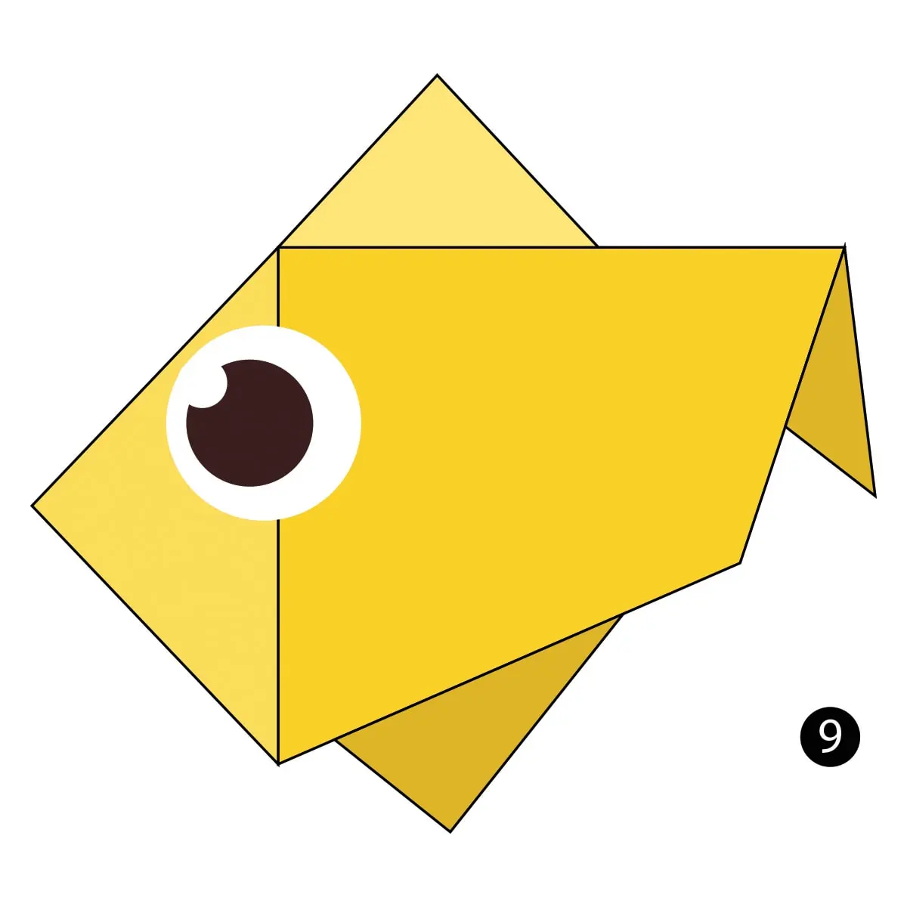

Origami Camel
Fun facts:
- Camels have three sets of eyelids and two rows of eyelashes to keep sand out of their eyes.
- Camels can completely shut their nostrils during sandstorms.
- Camels store fat, not water in their humps
Instructions
Origami Chameleon
Fun facts:
- They mainly change color in order to communicate or regulate body temperature.
- Their feet are shaped like tongs.
- Their eyes can swivel around in two different directions simultaneously.
Origami Panda
Fun facts:
- Pandas are very lazy and hungry! An adult can eat 12–38 kilos of bamboo per day for 12 hours!
- Pandas are naturally found only in China.
- They are very good swimmers.
Origami Teddy Bear
>Fun facts:
- The teddy was named after President Theodore Roosevelt, after he refused to shoot a bear during a 1902 hunting trip.
- Every year, 10th February is celebrated as Teddy Day!
- A person who likes or collects teddy bears is called an arctophile!
Origami Pigeon
Fun facts:
- Pigeons are incredibly complex and intelligent animals.
- They are renowned for their outstanding navigational abilities.
- Pigeons have excellent hearing abilities.
Origami Cicada
Fun facts:
- A cicada is a large insect which lives on trees, in warm countries.
- There are more than 3,000 species of cicadas.
- These insects have 3 eyes!
Origami Dog
Fun facts:
- A dog is a man's best friend.
- Their sense of smell is at least 40 times better than ours!
- Your dog could be left or right-pawed.
Origami Fish

Fun facts:
- Over 30,000 species of fish have been identified!
- Catfish have over 27,000 taste buds, whereas humans have only 9,000.
- Jellyfish, Starfish and Crayfish aren't really fish.